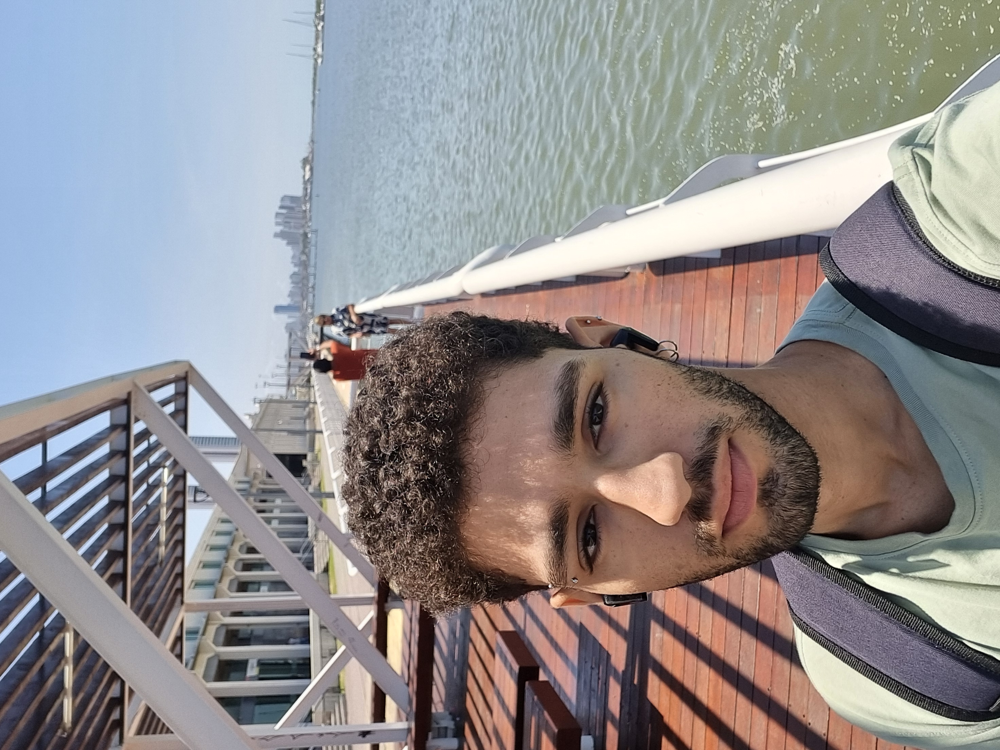

Pedro Ramos
Desenvolvedor Front-end
Desenvolvedor Front-end
Opa! Me chamo Pedro (ou PH) e estou no 2º período de Ciência da Computação na CESAR School. Tudo o que é relacionado à tecnologia me interessa. Sou muito curioso e venho buscando ampliar meus conhecimentos técnicos a fim de construir soluções que, de fato, resolvam problemas reais. Atualmente, o foco está voltado para o desenvolvimento de sites e aplicações web. Já fui aluno de Agronomia na UFRPE e, durante o período em que estive nessa graduação, tive a oportunidade de conhecer o sensoriamento remoto, com o qual, por meio de drones, era possível monitorar as culturas. A partir daí, decidi que entraria de cabeça na área de tecnologia. No meu tempo livre, gosto de ir à praia, andar de bicicleta, praticar esportes e jogar online. Quer me conhecer um pouco mais? Fala comigo por aqui! Segue também meu GitHub: https://github.com/phpedruo